01
Progettiamo
Studiamo lo spazio e organizziamo gli elementi del giardino in funzione del contesto e delle esigenze del cliente.

Progettazione, realizzazione e cura di giardini pensati per essere vissuti.
È uno spazio da progettare, realizzare e curare nel tempo.
Sa.Ni.Ca. mette insieme progettazione, realizzazione e manutenzione per seguire il verde a Palermo e provincia, dagli interventi più completi alla cura quotidiana.
Studiamo lo spazio e organizziamo gli elementi del giardino in funzione del contesto e delle esigenze del cliente.
Trasformiamo il progetto attraverso prato, aiuole, piante e soluzioni per l'irrigazione.
Seguiamo il verde nel tempo con manutenzione, potatura e cura di alberi e piante.
Un'offerta articolata per accompagnare il giardino nelle diverse fasi, con interventi che vanno dalla progettazione alla cura del verde.
Diamo una direzione allo spazio: distribuzione delle aree, verde, percorsi e soluzioni coerenti con il contesto.
Scopri il servizio →Dall'idea al risultato: trasformiamo il progetto in uno spazio verde concreto, curando le diverse lavorazioni.
Scopri il servizio →La cura continua mantiene il giardino ordinato, vivo e seguito nel tempo, con interventi programmati e mirati.
Scopri il servizio →Interventi su alberi, piante e siepi per accompagnarne crescita, forma e stato di cura.
Scopri il servizio →Soluzioni dedicate all’irrigazione degli spazi verdi, integrate nel progetto e nelle esigenze del giardino.
Scopri il servizio →Installazione e realizzazione del prato per completare lo spazio verde e valorizzarne l’insieme.
Scopri il servizio →Posa e sistemazione del prato sintetico per superfici che richiedono una soluzione specifica.
Scopri il servizio →Interventi dedicati alla cura delle piante e alla gestione delle problematiche del verde.
Scopri il servizio →Aiuole e sistemazione del verde definiscono passaggi, volumi e punti di interesse all’interno del giardino.
Scopri il servizio →Cura del verde per spazi residenziali privati e condominiali, con interventi in relazione alle caratteristiche dell’area.
Scopri il servizio →Spazi verdi su terrazzi progettati e curati in funzione delle esigenze dello spazio.
Scopri il servizio →Valutazione e orientamento per la gestione di piante e spazi verdi.
Scopri il servizio →Una selezione di fotografie che racconta alcuni degli spazi verdi e degli interventi di Sa.Ni.Ca.
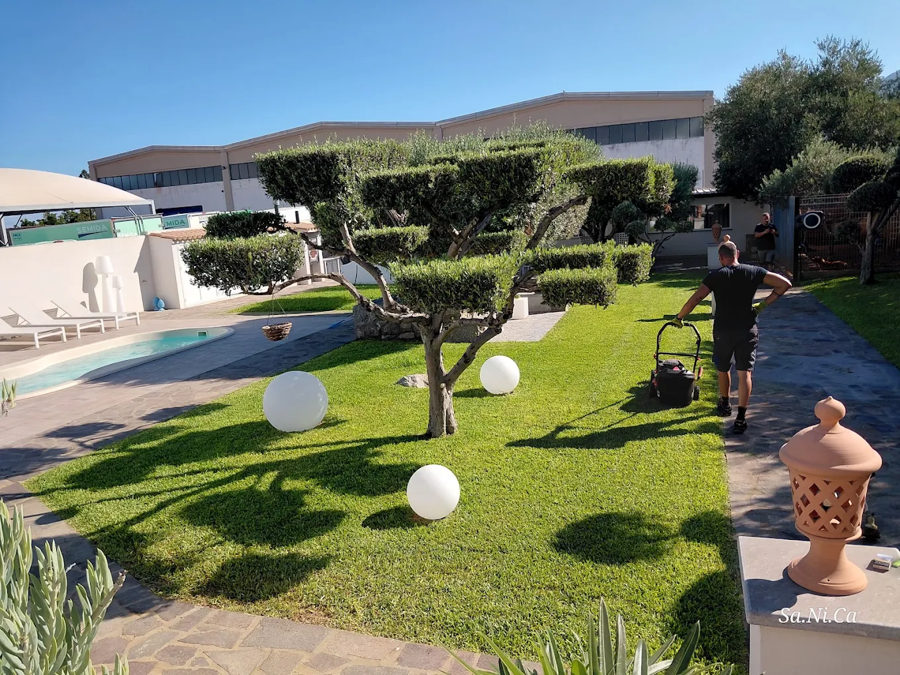

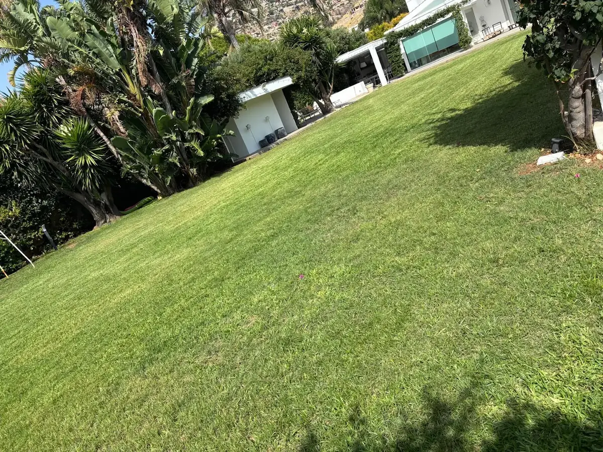
Una raccolta di immagini per mostrare ambienti, dettagli e momenti del lavoro sul verde.

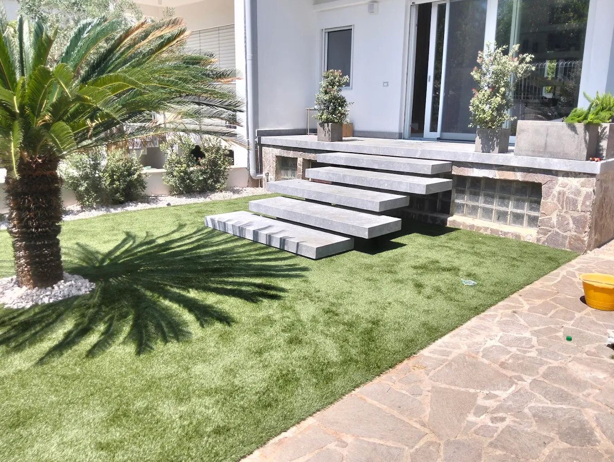

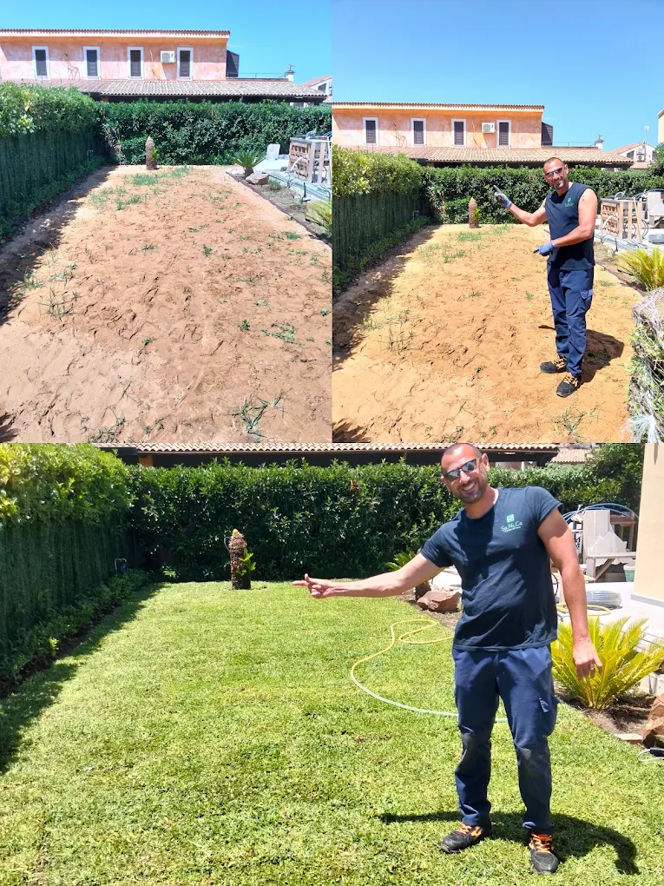
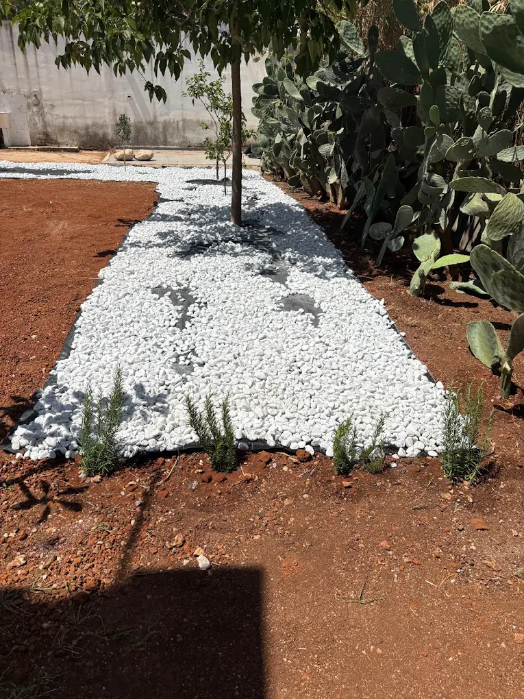


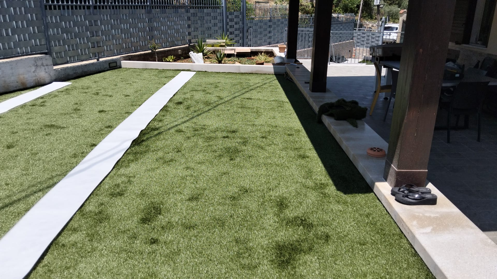
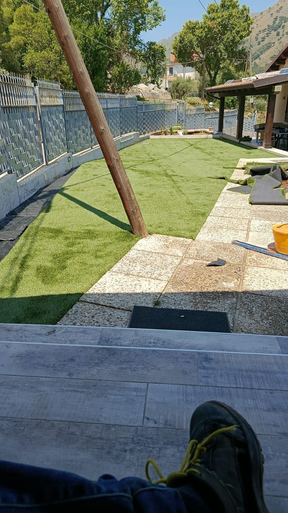
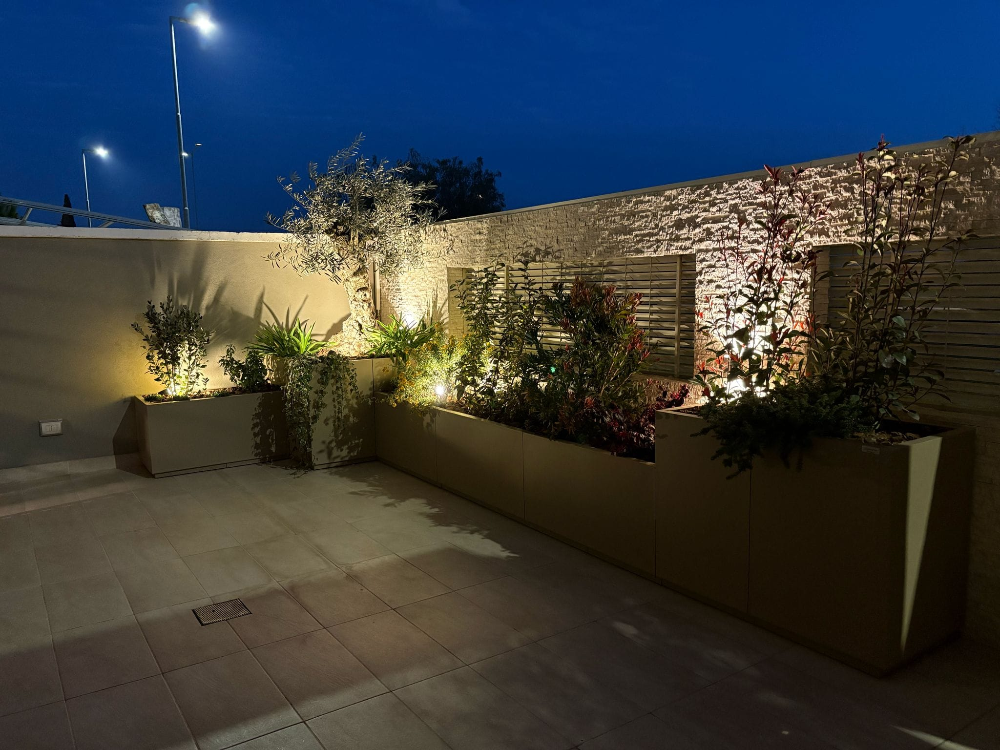

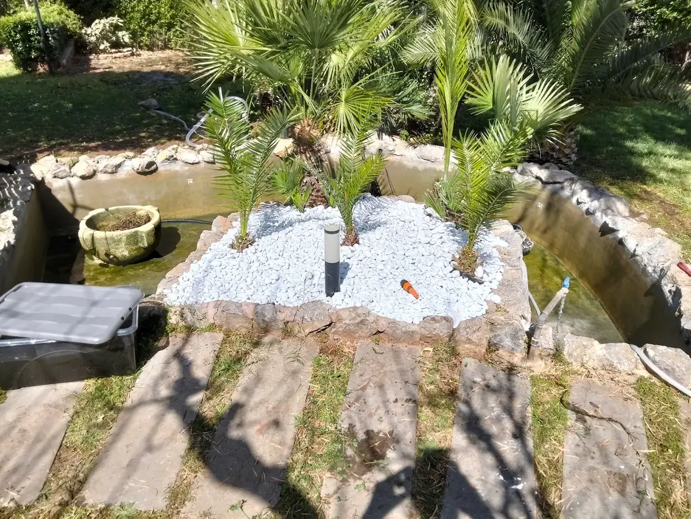

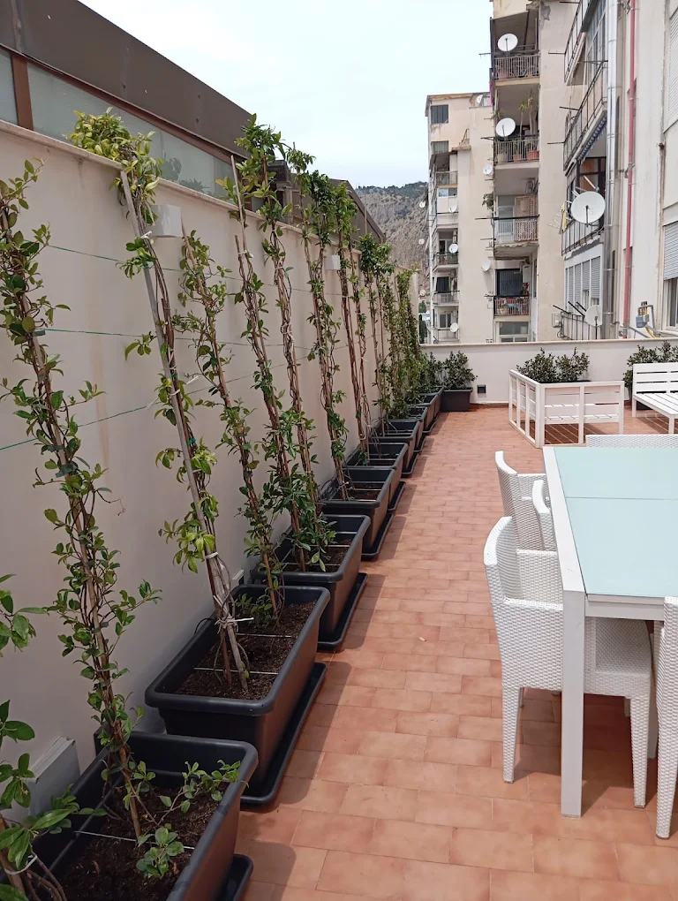

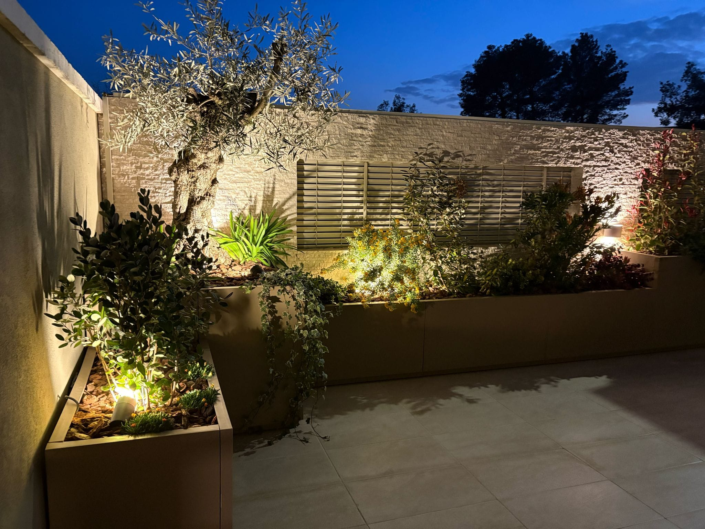
Non mostriamo soltanto il risultato finale. Le immagini di lavorazione raccontano preparazione, interventi e cura: la parte concreta del lavoro che porta un'area verde a prendere forma.